Im Menüpunkt
1 Auswertungen
1 Steuer-Meldungen
1 Vorsteuererstattung
kann der Antrag auf Vorsteuererstattung erstellt werden.
Hinweis
Der Menüpunkt steht vorerst nur für Mandanten mit dem Länderkennzeichen "Österreich" zur Verfügung.
Bei der Erstellung eines Antrages auf Vorsteuererstattung werden nur jene Buchungen berücksichtigt mit dem Steuerkennzeichen "Vorsteuer", bei denen eine Steuerzeile mit dem entsprechenden Land verwendet wurde.
Wenn noch keine Steuerzeile ein Land eingetragen hat, dann kann der Menüpunkt "Vorsteuererstattung" nicht geöffnet werden.
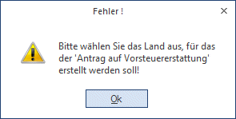
Die Vorsteuererstattung ist in 5 Schritten aufgebaut. Mit dem Assistenten wird man schrittweise durch die Erstellung eines Antrages geführt.
Schritt 1 - Selektion und Stammdaten
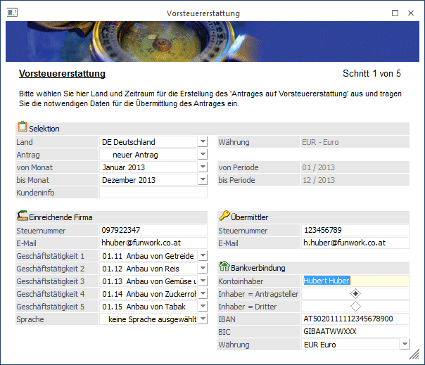
Ø Land
Hier muss zuerst ausgewählt werden, für welches Land der Antrag auf Vorsteuererstattung erstellt werden soll.
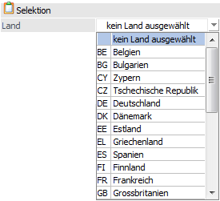
Sobald das Land ausgewählt wird, wird rechts als Info angezeigt, in welcher Währung die Beträge übermittelt werden müssen.
Ø Antrag
Nach der Auswahl des Landes steht das Feld "Antrag" zur Verfügung. Neben dem Eintrag "neuer Antrag" werden auch die bereits erzeugten Anträge aufgelistet.
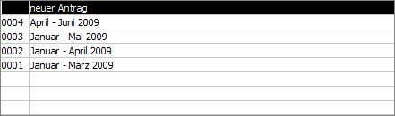
Ø von Monat/bis Monat
Für die Auswahl des Zeitraumes sind zwei Auswahllistboxen vorhanden, in denen der von- und der bis- Monat ausgewählt werden kann.
In den beiden Auswahllistboxen werden jeweils die Periodenbezeichnung und das Jahr angezeigt. Neben den beiden Auswahlmöglichkeiten werden rechts in einem statischen Feld angezeigt, welcher Periode und welchem Mesoyear die Auswahl entspricht. Dies ist z.B. für ungerade Wirtschaftsjahre von Vorteil.
Bei der Auswahl des Zeitraumes werden nur jene Monate angezeigt, die der aktuellen Wirtschaftsjahre entsprechen, z.B.: bei einem geraden Wirtschaftsjahr 2010 werden nur Jänner 2010 bis Dezember 2010 angezeigt.
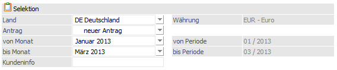
Der Erstattungszeitraum muss mindestens drei aufeinander folgende Monate (Ausnahmen sind November und Dezember) umfassen oder max. 1 Kalenderjahr.
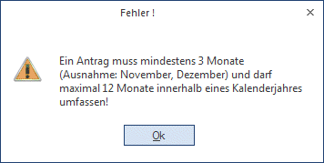
Wird anstelle von "neuer Antrag" ein bestehender Antrag ausgewählt, sind die beiden Auswahllistenboxen für den Zeitraum nicht mehr editierbar, sondern werden aus dem ursprünglichen Antrag verwendet und es wird eine Berichtigung für diesen Zeitraum erstellt.
Wird der Eintrag "neuer Antrag" ausgewählt und es wird ein Zeitraum ausgewählt, für den bereits ein Antrag erstellt wurde, wird mit einer Meldung darauf hingewiesen, dass es für diesen Zeitraum nur einen Antrag geben darf.
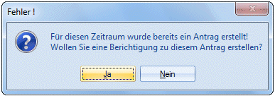
Ø Kundeninfo
Hier kann eine 20stellige Eingabe erfolgen, die in die Datei übernommen, aber nur als Information für den Übermittler verwendet wird.
Ø Steuernummer
Die Steuernummer der einreichenden Firma (des Antragssteller) wird aus dem Mandantenstamm vorbelegt, ansonsten ist diese einzutragen. Ist ein Pflichtfeld und muss eingetragen sein, ansonsten kann der Antrag nicht erstellt werden.
Ø E-Mail
Die E-Mail-Adresse des Antragsstellers wird ebenfalls aus dem Mandantenstamm vorbelegt, ansonsten ist diese einzutragen. Ist ein Pflichtfeld und muss ausgefüllt sein, da der Antrag ansonsten nicht erstellt werden kann.
Ø Geschäftstätigkeit (1,2,3,4,5)
Es ist möglich bis zu 5 Geschäftstätigkeiten anzugeben. Die Art des Geschäftes kann über die Auswahllistbox ausgewählt werden. Es muss mindestens 1 Geschäftstätigkeit angeführt werden, ansonsten gelangt man nicht in den nächsten Schritt.
Ø Sprache
Das Feld Sprache ist kein Pflichtfeld, wird jedoch der Code "10. Sonstiges" verwendet und ein Beschreibungstext wurde eingegeben, wird im zweiten Schritt die Sprache überprüft. Zudem wird noch überprüft, ob das Erstattungsland jene Sprache akzeptiert.
Hinweis
Ist die Steuernummer der einreichenden Firma und die des Übermittlers identisch, kann die E-Mail-Adresse vom Übermittler nicht eingegeben werden.
Ø Bankverbindung
Eingabe der Bankverbindung, wie IBAN, BIC, den Namen des Kontoinhabers und in welcher Währung das Konto geführt wird. Diese Felder sind Pflichtfelder und müssen ausgefüllt sein, ansonsten kann der Antrag nicht erstellt werden.
Beim Klick auf dem VOR-Button wird geprüft, ob alle für die Übermittlung notwendigen Felder gefüllt sind. Die Eingaben, die in diesem Fenster vorgenommen wurden, werden jahresübergreifend und benutzerunabhängig gespeichert.
Sind Buchungen vorhanden, für die noch keine "UVA-Vorbereitung" durchgeführt wurde, wird in die "UVA-Vorbereitung" gewechselt.
Danach werden in den betroffenen Wirtschaftsjahren die Buchungen mit dem Steuerkennzeichen "Vorsteuer" gesucht, die im gewählten Zeitraum mit einer Steuerzeile gebucht wurden, bei der das ausgewählte Land eingetragen wurde.
Wurden Buchungen gefunden, die nicht bei der Vorsteuererstattung berücksichtigt werden können, weil der Betrag negativ ist oder der Steuerbetrag Null beträgt, wird eine Liste dieser Buchungen gedruckt.
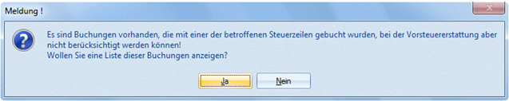
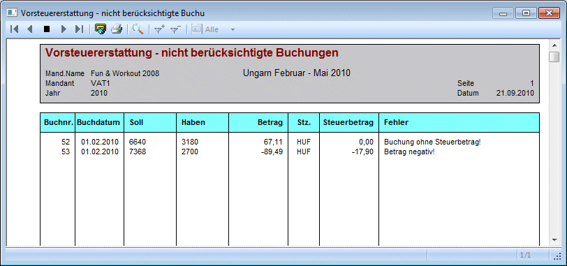
Hinweis
Die Liste wird nur bei einer Erstmeldung ausgegeben, da bei einer Berichtigung nur bereits übermittelte Zeilen berücksichtigt werden.
Achtung
Die Prüfung der Währung wird nur durchgeführt, wenn die Währung des Erstattungslandes nicht EUR ist. In diesem Fall muss die Kurzbezeichnung der in der WinLine verwendeten Fremdwährung dem ISO-Code dieser Währung entsprechen. Bei Anträgen in der Währung EUR werden alle Buchungen berücksichtigt und es werden jeweils die Landeswährungsbeträge verwendet.
Buttons
Ø OK
Mit dem OK-Button bestätigen Sie Ihre Eingaben.
Ø Ende
Hiermit beenden Sie Ihre Eingaben ohne diese zu speichern. Das aktuelle Fenster wird geschlossen.
Ø Vor / Zurück
Mit dem Vor-Button kann in den nächsten Schritt gewechselt werden, mit dem Zurück-Button wechseln Sie in den vorherigen Schritt zurück.
Ø UVA-Vorbereitung
Über diesen Button kann die UVA-Vorbereitung angestoßen werden, dabei wird das entsprechende Fenster geöffnet.
Ø Codeliste
In jedem Schritt besteht die Möglichkeit sich folgende Listen, entweder am Bildschirm oder auf Drucker, auszugeben.
Ø Alle Eingaben verwerfen
Beim Drücken dieses Buttons werden alle Ihre Eingaben zurückgesetzt.
Schritt 2 - Buchungen
Im 2. Schritt werden alle betroffenen Buchungen mit dem Steuerkennzeichen "Vorsteuer" und mit jener Steuerzeile, die das ausgewählte Land eingetragen hat, aufgelistet.
Hinweis
Stornobuchungen werden hier nicht angezeigt, außer es handelt sich um eine Berichtigung und die stornierte Buchung war in der entsprechenden Erstmeldung enthalten, dann wird die Buchung mit Betrag 0 angezeigt.
Gibt es zur Faktura bereits Zahlungen, dann werden die Bemessung und der Steuerbetrag um die dabei gebuchten Skontobeträge vermindert.
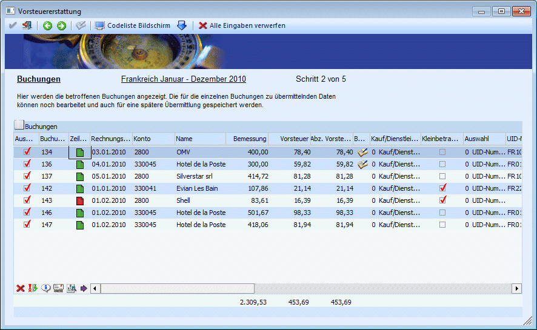
Bei der Erstmeldung besteht die Möglichkeit die Buchungen einzeln zu selektieren. Bei einer Berichtigung ist dies nicht mehr möglich, dann werden nur noch genau jene Buchungen angezeigt, die auch in der Erstmeldung enthalten waren.
Die für die Übermittlung notwendigen Eingaben bzw. Daten können hier noch bearbeitet werden:
ü Auswahl Kauf/Dienstleistung / Import
ü Handelt es sich um eine Kleinbetragsrechnung unter € 150,-, ist keine UID-Nummer notwendig.
ü Auswahl Rechnungsnummer/Importnummer (nur für "Import")
ü Eingabe der Rechnungsnummer/Importnummer, wird aus dem Feld OP-Nummer vorbelegt
ü Auswahl UID-Nummer oder Steuernummer, nur möglich mit der Option "Kauf"; die Steuernummer gibt es nur für Deutschland, für alle anderen Länder muss die UID-Nummer eingetragen werden
ü Die Adressdaten (Straße, PLZ, Ort) werden aus dem Kontenstamm vorbelegt, können aber jederzeit editiert werden, z.B.: B-Buchungen, dabei wird die geänderte Adresse nicht in den Kontenstamm zurückgeschrieben.
ü Eingabe der UID-Nummer oder Steuernummer. Eine geänderte UID-Nummer kann, wenn gewünscht, in den Kontenstamm zurückgeschrieben werden.
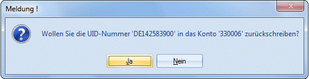
Bei einer Änderung der UID-Nummer wird diese auch in alle anderen Zeilen für das Konto übernommen.
ü Land (ISO): das Land aus dem Kontenstamm wird in einer eigenen Spalte angezeigt und es wird geprüft, ob im Länderstamm ein entsprechender ISO-Code hinterlegt ist. Ist dies nicht der Fall, muss der Ländercode manuell eingetragen werden. Im unteren Bereich der Tabelle steht der Button "Länderkennzeichen übernehmen" zur Verfügung. Mit diesem Button kann das ISO-Kennzeichen des Erstattungslandes für jede selektiere Zeile übernommen werden.
ü Es besteht die Auswahl von bis zu 5 Vorsteuererstattungs-Codes pro Zeile zu hinterlegen. Wird der Button gedrückt oder die F9-Taste, dann öffnet sich das Vorsteuererstattung-Code-Fenster, wo der Code ausgewählt bzw. bearbeitet werden kann. Da pro Buchungsnummer nur eine Zeile eingefügt wird, werden die Beträge bei Splitbuchungen aufsummiert und die Vorsteuererstattungs-Codes der einzelnen Konten wird übernommen. Da pro Zeile nur 1-mal der Code '10. Sonstiges' verwendet darf, steht auch das Feld für den Beschreibungstext nur 1-mal zur Verfügung.
ü Die Beträge wie Bemessung, Vorsteuer und abziehbare Vorsteuer werden aus dem Journal vorgeschlagen und können noch editiert werden. Wenn einer der Werte geändert wird, wird die Zeile mit einem Symbol markiert.
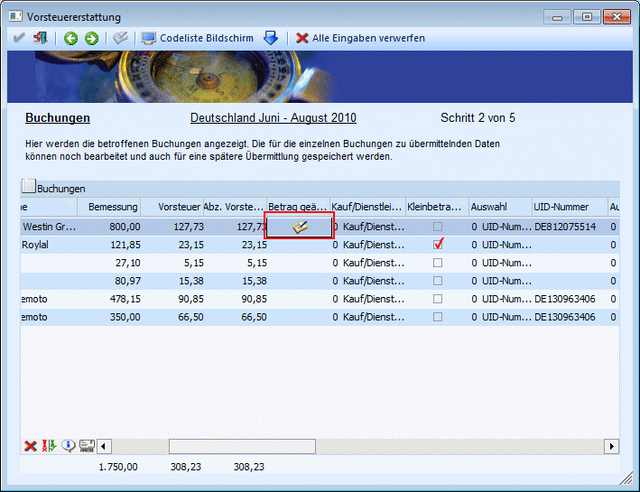
Hinweis
Wenn Buchungen nicht in der Landeswährung des Erstattungslandes gebucht wurden, werden in diesem Fall 4 neue Spalten in der Tabelle angezeigt:
ü FW
In dieser Spalte wird
entweder das Kürzel der Währung oder "EUR" für Landeswährungsbuchungen angezeigt
ü FW-Bemessung
Die Bemessung wird
aus dem Journal geholt und ist nicht editierbar
ü FW-Vorsteuer
Die Vorsteuer
kommt aus dem Journal und kann nicht geändert werden
ü FW-Abz. Vorsteuer
Die Abz.
Vorsteuer wird aus dem Journal geholt und kann nicht editiert werden
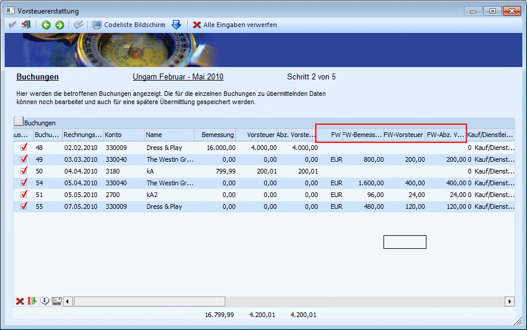
Die Beträge wie Bemessung, Vorsteuer und abz. Vorsteuer in der Währung des Erstattungslandes werden dann auf Null gestellt und müssen manuell eingegeben werden.
Werden keine Beträge eingegeben, kann die Buchung nicht für den Antrag verwendet werde, da Buchungen mit einem Betrag Null in einer Erstmeldung nicht berücksichtigt werden können (Auswahl-Checkbox muss in diesem Fall dann deaktiviert sein).
Wurden Splitbuchungen in falscher Währung gebucht, so werden die FW-Beträge der einzelnen Splitzeilen aufsummiert und zu einer Zeile in der Tabelle zusammenfasst.
Sind Buchungen in falscher Währung mit Zahlung und Skonto vorhanden, so werden die Beträge nicht entsprechend vermindert.
Die 4 zusätzlichen Spalten werden nur dann angezeigt, wenn eine Buchung mit falscher Währung vorhanden ist.
Beim Verlassen der Tabelle bzw. beim Drücken des VOR-Buttons werden die Beträge geprüft, d.h. keiner der Beträge darf negativ sein, der Vorsteuerbetrag darf nicht größer sein als die Bemessung und die abz. Vorsteuer darf nicht größer sein als die Vorsteuer. Die Eingaben werden auch gespeichert und bei der nächsten Meldung wieder vorgeschlagen. Der Betrag wird nur gespeichert und wieder geladen, wenn er auch tatsächlich manuell eingegeben wurde, wenn nicht wird wie bisher der Betrag bei jeder Meldung neu gerechnet.
Hinweis
Mit der F3-Taste kann in jedem der Felder der ursprüngliche bzw. errechnete Wert wiederhergestellt werden.
Beim Verlassen des 2. Schrittes mit dem "VOR"- oder "Zurück"- Button werden alle Eingaben im Journal geschrieben, auch beim Schließen des Fensters in diesem Schritt kommt die Abfrage, ob die Änderungen gespeichert werden sollen.
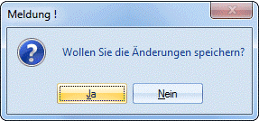
Mit dem "Vor"-Button wird außerdem geprüft, ob Zeilen selektiert wurden und ob alle für die Übermittlung notwendigen Felder gefüllt sind. Wenn der Code '10. Sonstige' verwendet wurde und dazu Beschreibungstexte eingegeben wurden, wird außerdem geprüft, ob im 1. Schritt eine Sprache eingetragen wurde und ob diese vom Erstattungsland akzeptiert wird.
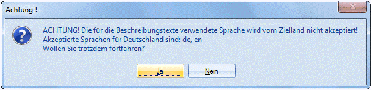
Achtung
Buchungen, die noch nicht festgeschrieben sind, die aber bei einem Antrag auf Vorsteuererstattung berücksichtigt wurden, können nicht im Fenster "Buchungsstorno" storniert werden.
Es ist auch nicht möglich Buchungen, die bei der Vorsteuererstattung berücksichtigt wurden, über "Buchungen bearbeiten" zu editieren.
Buttons
Ø Keine
Alle ausgewählten Buchungszeilen werden deselektiert. Der Button steht nur bei der Erstmeldung zur Verfügung.
Ø Umkehren
Mit dem Umkehren-Button kann die vorgenommene Selektion in das Gegenteil gekehrt werden. Der Button steht nur bei der Erstmeldung zur Verfügung.
Ø Länderkennzeichen übernehmen
Durch Drücken des Buttons wird das Erstattungsland in allen selektierten Zeilen übernommen.
Ø Buchungsinfo
Durch Drücken des Buttons wird die Buchungsinfo geöffnet, beim Wechseln der Zeile wird diese automatisch aktualisiert. Mit Doppelklick auf die Buchungsnummer wird ebenfalls die Buchungsinfo geöffnet.
Ø Alle Eingaben verwerfen
Der Button steht nur bei der Erstmeldung zur Verfügung. Mit dem Button werden alle Eingaben verworfen, die Tabelle wird neu gefüllt und alle Felder werden wieder aus dem Journal bzw. Kontenstamm vorbelegt.
Schritt 3 - Dateianhang
Im 3. Schritt kann zum Antrag auch ein Dateianhang hinzugefügt werden.
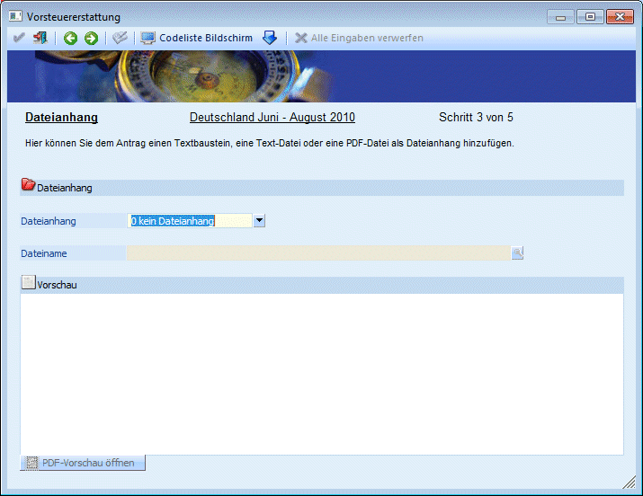
Als Dateianhang können folgende Dateien hinzugefügt werden
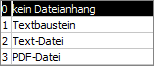
Wenn ein Textbaustein oder eine Textdatei verwendet wird, wird unten im Fenster eine Vorschau angezeigt, der Button "PDF-Vorschau öffnen" steht für alle Typen zur Verfügung.
Pro Meldung ist nur ein Dateianhang (PDF, usw.) erlaubt. Sollen mehrere Rechnungen als Kopie mit versendet werden, so müssen diese z.B.: zu einer PDF-Datei zusammengefasst werden.
Da nicht alle Länder Dateianhänge akzeptiert, wird auch geprüft, ob dies für das Zielland der Fall ist.
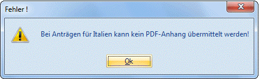
Schritt 4 - Erklärungen
Im 4. Schritt müssen die zutreffenden Erklärungen aktiviert werden.
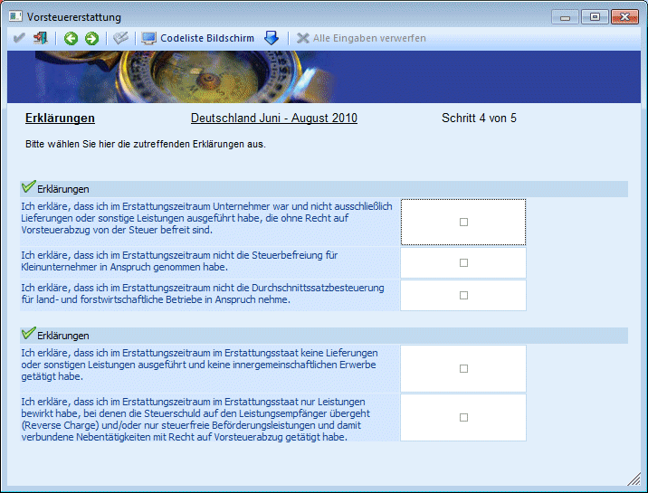
Die ersten 3 und eine der anderen beiden Erklärungen müssen wahrheitsgemäß aktiviert werden, ansonsten kann kein Antrag auf Vorsteuererstattung erzeugt werden.
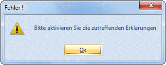
Schritt 5 - Ausgabe
Im 5. Schritt wird der Antrag erzeugt und kann an FINANZOnline übermittelt werden.
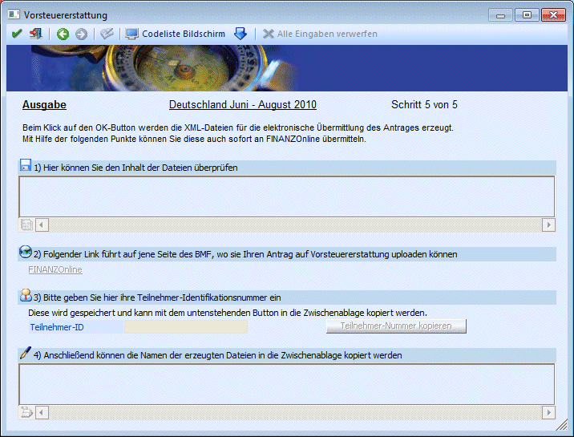
Mit dem OK-Button werden erst die XML-Dateien für die Übermittlung an FINANZOnline erstellt. Nachdem Klick auf dem OK-Button wird dementsprechend eine Meldung ausgeben:
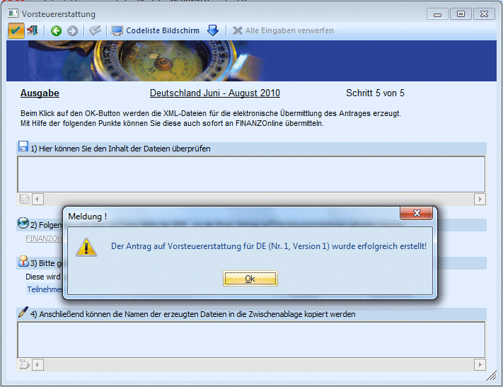
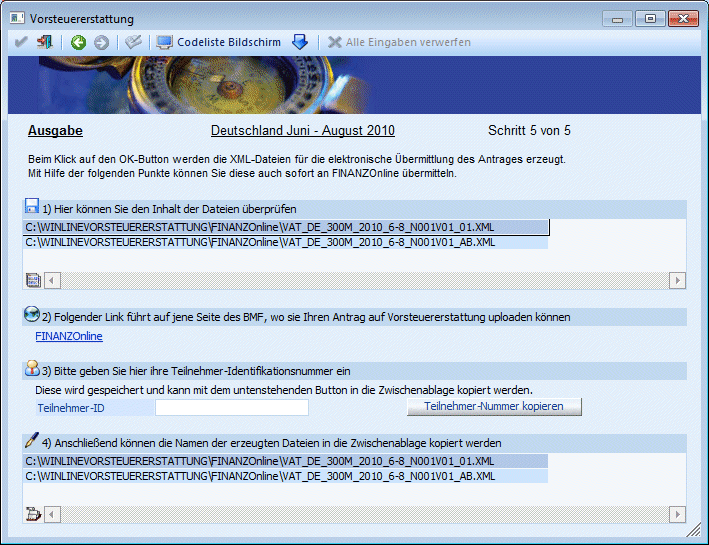
Pro Antrag werden mindestens 2 Dateien erzeugt:
Die erste Datei beinhaltet die einzelnen Rechnungen. Der Name setzt sich wie folgt zusammen:
VAT_Erstattungsland_Mandantennummer_Wirtschaftsjahr_vonMonat-bisMonat_Interne Antragsnummer+Version des Antrages_fortlaufende Nummer.XML.
Da maximal 1000 Rechnungen in einer Datei übermittelt werden können, werden die Dateien aufgeteilt, wenn mehr als 1000 Rechnungen gemeldet werden sollen.
Beispiel
VAT_DE_300M_2010_6-8_N001V001_01.XML
Steht für die Vorsteuererstattung für Deutschland des Mandanten 300M für das Jahr 2010 und für die Monate Juni bis August, mit der internen Auftragsnummer 001 und der Version 01 mit der laufenden Nummer 01.
Wird eine Erstmeldung erzeugt, so ist die Versionsnummer 01. Bei einer Berechtigung wäre es die Versionsnummer 02, mit der gleichen internen Antragsnummer. Bei einer nochmaligen Berichtigung würde die Version 03 lauten und die interne Antragsnummer würde dieselbe sein.
Die zweite Datei lautet wie die erste Datei, mit dem einzigen Unterschied, dass statt der laufenden Nummer "AB" steht.
Diese Abkürzung "AB" steht für Abschluss-Datei. In dieser Datei sind die Gesamtsummen, die Unternehmerdaten und die Erklärungen enthalten.
Die Dateien werden im Verzeichnis "FinanzOnline" unter dem Programmverzeichnis erstellt.
Mittels Doppelklick in der Tabelle oder Klick auf den Button unten in der Tabelle kann die Datei im "Vorsteuererstattung XML-Viewer" angezeigt werden.
Anschließend können die Dateien an FINANZOnline übermittelt werden. Wie aus den anderen FinanzOnline-Fenstern bekannt, gibt es einen Link auf die FinanzOnline-Startseite und die Möglichkeit die Teilnehmer-ID zu speichern und in die Zwischenablage zu kopieren.
In der zweiten Tabelle werden nochmals die Dateien aufgelistet, der Doppelklick in eine Zeile oder der Klick auf den Button führt hier, aber dazu, dass der Dateiname inkl. Pfad in die Zwischenablage kopiert wird.